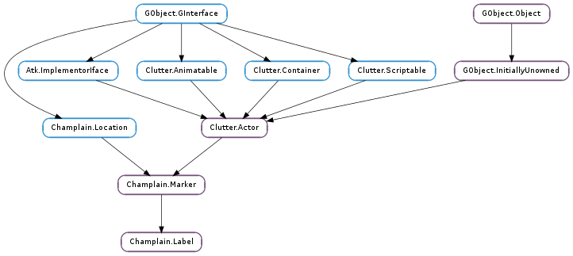

| static | new() |
| static | new_from_file(filename) |
| static | new_full(text, actor) |
| static | new_with_image(actor) |
| static | new_with_text(text, font, text_color, label_color) |
| get_alignment() | |
| get_attributes() | |
| get_color() | |
| get_draw_background() | |
| get_ellipsize() | |
| get_font_name() | |
| get_image() | |
| get_single_line_mode() | |
| get_text() | |
| get_text_color() | |
| get_use_markup() | |
| get_wrap() | |
| get_wrap_mode() | |
| set_alignment(alignment) | |
| set_attributes(list) | |
| set_color(color) | |
| set_draw_background(background) | |
| set_ellipsize(mode) | |
| set_font_name(font_name) | |
| set_image(image) | |
| set_single_line_mode(mode) | |
| set_text(text) | |
| set_text_color(color) | |
| set_use_markup(use_markup) | |
| set_wrap(wrap) | |
| set_wrap_mode(wrap_mode) |
| Name | Type | Flags | Description |
|---|---|---|---|
| alignment | Pango.Alignment | r/w | The label’s alignment |
| color | Clutter.Color | r/w | The label’s color |
| draw-background | bool | r/w | The label has a background |
| ellipsize | Pango.EllipsizeMode | r/w | The label’s text ellipsize mode |
| font-name | str | r/w | The label’s text font name |
| image | Clutter.Actor | r/w | The image of the label |
| single-line-mode | bool | r/w | The label’s single line mode |
| text | str | r/w | The text of the label |
| text-color | Clutter.Color | r/w | The label’s text color |
| use-markup | bool | r/w | The text uses markup |
| wrap | bool | r/w | The label’s text wrap |
| wrap-mode | Pango.WrapMode | r/w | The label’s text wrap mode |
None
| Name | Type | Access |
|---|---|---|
| parent | Champlain.Marker | r |
Bases: Champlain.Marker
The Champlain.Label structure contains only private data and should be accessed using the provided API
| Returns: | a new Champlain.Label ready to be used as a Clutter.Actor. |
|---|---|
| Return type: | Clutter.Actor |
Creates a new instance of Champlain.Label.
| Parameters: | filename (str) – The filename of the image. |
|---|---|
| Raises: | GLib.GError |
| Returns: | a new Champlain.Label with a drawn label containing the given image. |
| Return type: | Clutter.Actor |
Creates a new instance of Champlain.Label with image loaded from file.
| Parameters: |
|
|---|---|
| Returns: | a new Champlain.Label with a drawn label containing the given image. |
| Return type: |
Creates a new instance of Champlain.Label consisting of a custom Clutter.Actor.
| Parameters: | actor (Clutter.Actor) – The image as a Clutter.Actor. |
|---|---|
| Returns: | a new Champlain.Label with a drawn label containing the given image. |
| Return type: | Clutter.Actor |
Creates a new instance of Champlain.Label with image.
| Parameters: |
|
|---|---|
| Returns: | a new Champlain.Label with a drawn label containing the given text. |
| Return type: |
Creates a new instance of Champlain.Label with text value.
| Returns: | the label’s text alignment. |
|---|---|
| Return type: | Pango.Alignment |
Get the label’s text alignment.
| Returns: | the label’s text attributes. |
|---|---|
| Return type: | Pango.AttrList |
Gets the label’s text attributes.
| Returns: | the label’s background color. |
|---|---|
| Return type: | Clutter.Color |
Gets the label’s background color.
| Returns: | if the label’s has a background. |
|---|---|
| Return type: | bool |
Checks whether the label has a background.
| Returns: | the label’s text ellipsize mode. |
|---|---|
| Return type: | Pango.EllipsizeMode |
Gets the label’s text ellipsize mode.
| Returns: | the label’s image. |
|---|---|
| Return type: | Clutter.Actor |
Get the label’s image.
| Returns: | the label’s text single line mode. |
|---|---|
| Return type: | bool |
Checks the label’s single line mode.
| Returns: | the label’s text color. |
|---|---|
| Return type: | Clutter.Color |
Gets the label’s text color.
| Returns: | if the label’s text contains markup. |
|---|---|
| Return type: | bool |
Check whether the label uses markup.
| Returns: | if the label’s text wraps. |
|---|---|
| Return type: | bool |
Checks whether the label text wraps.
| Returns: | the label’s text wrap mode. |
|---|---|
| Return type: | Pango.WrapMode |
Gets the label’s text wrap mode.
| Parameters: | alignment (Pango.Alignment) – The label’s alignment |
|---|
Sets the label’s text alignment.
| Parameters: | list (Pango.AttrList) – The label’s text attributes. |
|---|
Sets the label’s text attributes.
| Parameters: | color (Clutter.Color or None) – The label’s background color or None to reset the background to the default color. The color parameter is copied. |
|---|
Sets the label’s background color.
| Parameters: | background (bool) – value. |
|---|
Sets if the label has a background.
| Parameters: | mode (Pango.EllipsizeMode) – The label’s ellipsize mode. |
|---|
Sets the label’s text ellipsize mode.
| Parameters: | font_name (str or None) – The label’s font name or None to reset the font to the default value. |
|---|
Sets the label’s font name such as “Sans 12”.
| Parameters: | image (Clutter.Actor or None) – The image as a Clutter.Actor or None to remove the current image. |
|---|
Sets the label’s image.
| Parameters: | mode (bool) – The label’s single line mode |
|---|
Sets if the label’s text is on a single line.
| Parameters: | color (Clutter.Color or None) – The label’s text color or None to reset the text to the default color. The color parameter is copied. |
|---|
Sets the label’s text color.
| Parameters: | use_markup (bool) – The value |
|---|
Sets if the label’s text uses markup.
| Parameters: | wrap_mode (Pango.WrapMode) – The label’s wrap mode. |
|---|
Sets the label’s text wrap mode.